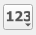

Praktikum 9 Geostatistika (1)
“Everything is related to everything else, but near things are more related than distant things.” (Waldo Tobler, 1970).
9.1 Punktimustri analüüs
Punktimustri analüüsi näol on tegemist statistiliste meetodite kogumiga, mille abil saab uurida ruumilisi (keerukaid) suhteid nähtuste vahel, mida on kujutatud punktidena. Näiteks asustusüksused maastikul või mingi info (nt pärimus, keel, ilm) kogumiskoht. Kuigi sageli on punktidega kaasas ka täiendavat infot, mis punkti iseloomustab (nt jutustuse liik, keelend, temperatuur), siis võib meid huvitada puhtalt ka punktide jaotumine ruumis.
Arheoloogias on selliseid meetodeid kasutatud juba alates 1960. aastatest, kui hakati rohkem tegelema kvantitatiivsete meetoditega. Näiteks on uuritud leidude paiknemist asulates, hoonetes ja matusekohtades ning linnamägesid maastikul. GISi kasutuselevõtmine lihtsustas oluliselt nende analüüside tegemist.
9.1.1 Punktitihedus
Lihtne viis punktide jaotumise formaalseks hindamiseks on mõõta nende paiknemistihedust mingis kindlas piirkonnas. Seda nimetatakse ka esimese järgu ruumiliseks intensiivsuseks (first-order spatial intensity). Lihtsaim tulemus keskmise intensiivsuse väljendamiseks võib olla arv, mis näitab oodatavat punktide hulka mingil alal. Vaatame näidet!
Alloleval pildil on näha 100 punkti, mis jaotuvad juhuslikult alal, mille mõõtmed on 10 x 10 ühikut ning mis on omakorda jagatud 2 x 2 ruutudeks. Kokku on alal niisiis 25 ruutu. Ühikud ei ole siinkohal tähtsad. Need sõltuvad meie uurimisalast ja -küsimusest ning võivad ulatuda nanomeetrist kilomeetri ja valgusaastani. Esimese asjana võiks küsida, kui palju punkte võiks paikneda ühes ruudus, arvestades et igal ruudul (või muul pindalaühikul) on sama hea võimalus punktide saamiseks. Võiks eeldada, et vastus on 4, kuna 100 / 25 = 4.
Joonis 9.1: Punktide juhuslik jaotumine ja võrdlus Poissoni jaotusega (Gillings et al. 2020)
Tegelikult järgib punktide juhuslik paiknemine aga teoreetilist Poissoni jaotust, mille kohaselt on mitmes ruudus vähem kui 4 ja üksikutes ruutudes rohkem kui 4 punkti. Täiesti juhuslikult paiknevate punktide jaotuse vaadeldav intensiivsus pindalaühiku kohta peakski järgima Poissoni jaotust. Sellist olukorda nimetatakse täielikuks ruumiliseks juhuslikkuseks (complete spatial randomness – CSR) ja selle jaotuse loonud juhuslikku käitumist nimetatakse Poissoni punkti protsessiks (Poisson point process). Huvi korral vaata Poissoni jaotuse tutvustust näiteks 365 Data Science videost.
Võiksime teoreetiliselt ka eeldada, et iga punkt kogu uurimisala ulatuses käitub samamoodi. Pärismaailmas olevad punktid sellisele eeldusele aga sageli ei vasta. Näiteks koonduvad punktid pigem mingisse uurimisala piirkonda ja teistes uurimisala piirkondades on neid hõredalt. Sellisel juhul võib eeldada, et punktide intensiivsust uurimisala erinevates piirkondades mõjutab mingi väline protsess/käitumine. Näiteks võivad külad koonduda mingi kihelkonna põhjaossa, kuna lõunaosas on soo, või parimate riigieksami tulemustega õpilased suurematesse linnadesse, kuna seal on rohkem eliitkoole.
Joonis 9.2: Mittehomogeenne jaotumine ja võrdlus Poissoni jaotusega (Gillings et al. 2020)
Ülaloleval joonisel on näha selgelt, et punktid koonduvad üles parempoolsesse nurka ning ruudupõhine lugemine näitab, et jaotus ei järgi Poissoni jaotust. Sageli on aga erinevus sellisest juhuslikust homogeensest punktimustrist suhteliselt selge ning me ei peagi seda niimoodi vaatama või testima. Pärismaailmas ongi väga vähe nähtuseid, mis on täielikult juhuslikud.
Populaarne meetod esimese järgu intensiivsuse kokkuvõtmiseks on tuumhindamine (Kernel Density Estimation ehk KDE). See on sarnane ruudupõhise lugemisega, aga kindlate ruutude asemel liigub kogu punktidega kaetud alast süsteemselt üle aken ehk kernel ehk tuum. Igas asukohas loetakse kokku punktid, mis jäävad parajasti kerneli alla jäävale alale ja see arv jäädvustatakse kerneli (ajutisse) keskkohta. Tulemuseks on rasterkiht, mille iga piksli väärtus näitab punktimustri hinnangulist intensiivsust selles piirkonnas.
Joonis 9.3: KDE tööpõhimõte. Näidatud on 5 andmepunkti, kindla suurusega kernel ning tuletatud KDE
KDE puhul on oluline kasutatava akna suurus (kernel bandwidth), mis indikeerib seda, kui suure mõjualaga käitumine punktandmeid tekitas: mida suurem aken, seda kaugemaleulatuvam on ühe punkti mõju. Akna suurus on pisut arbitraarne valik ja üldiselt soovitatakse katsetada mitme erineva suurusega, et saada mustrist parem ettekujutus.
Joonis 9.4: KDE tulemus erineva akna suurusega (Gillings et al. 2020)
Lisaks akna suurusele mängib pisut rolli ka see, mis kujuga kernel on, indikeerides seda, kui suur mõju kerneli alla jäävatel punktidel mingis kerneli osas on. Näiteks võivad suurema kaalu saada kerneli keskele jäävad punktid (triweight), aga kõikidel punktidel võib olla terves kerneli ulatuses ka ühesugune kaal (uniform).
Joonis 9.5: Erinevad kerneli kujud (Brian Amberg, CC BY-SA 3.0, https://commons.wikimedia.org/w/index.php?curid=5329895)
Ehkki vahel võib punktimustri intensiivsust hinnata ka niisama, palja silmaga, peetakse KDE-d oluliseks alguspunktiks punktide jaotumise analüüsimisel, kuna:
- erinevate kerneli suuruste võrdlemine aitab saada punktimustri jaotumisest selgemat ülevaadet;
- see aitab mõista olukordi, kus on liiga palju punkte, et lihtsalt peale vaadates midagi nende kohta öelda, või kus punktidel on mingi kaal ning neid ei saa seetõttu võrdsetena käsitleda;
- see võib olla sisendiks järgmistele, keerukamatele analüüsidele (näiteks mudelitele, kus võrreldakse mittehomogeensete punktimustrite tekkeprotsesse).
9.2 Ülesanne 1
Laadime QGISi muinsuskaitseameti kultuurimälestiste registrist pärit andmestiku malestised.gpkg, kus on ajaloo, arheoloogia, arhitektuuri ja kunstiga seotud muinsuskaitse all olevad mälestised (vektorandmed, punktid). Koostame kultuurimälestiste leviku paremaks mõistmiseks KDE kihid erinevate akna suurustega. Selleks
- avame Maa-ameti omavalitsuste polügoonikihi
omavalitsus.gpkgja kultuurimälestiste punktikihimalestised.gpkg,
- valime
Processing → Toolbox → Interpolation → Heatmap (Kernel density estimation).Point layerväärtuseks määramemalestised.
- Raadiuseks võib esialgu panna 20 kilomeetrit (jälgi, et ühik oleks õige!) ning piksli suuruseks 1000x1000 (meetrit).
Joonis 9.6: KDE sätted
- Lõikame tulemuse omavalitsuste piiridesse:
Raster → Extraction → Clip raster by mask layer → Input: Heatmap, Mask layer: omavalitsus → Run.
- Kasutame rastri värvimiseks sobivat värvipaletti (
Symbology → Render type: Singleband pseudocolor → Color ramp) ja uurime kaIdentify featurestööriista abil (Ctrl+Shift+i) funktsiooniga rastri väärtuseid erinevates kohtades. - Võrdleme KDE tulemust ka omavalitsustepõhise kultuurimälestiste jaotumisega. Selleks loeme kokku igas KOV-is olevate kultuurimälestiste arvu (nt
Vector → Analysis Tools → Count points in polygon). Polügooni kihiks valimeomavalitsusning punktide kihiksmalestised. Visualiseerime tekkinud kihti tulbaNUMPOINTSabil. Mis on erinevused ja millest need tulevad?
Joonis 9.7: Kultuurimälestiste KDE raadiusega 20 km ja piksli suurusega 1000 m ning kultuurimälestised omavalitsuste kaupa
KDE heatmap’i algoritmi Quartic kerneli kujuga kasutab ka Symbology jaotise valikus olev heatmap, millega puutusime kokku eelmises praktikumis.
9.3 Model Designer
Kui soovime samu funktsioone korduvalt järjest kasutada (nt võrrelda tulemusi erinevate kerneli suuruste ja kujudega), siis võime neist ise uue funktsiooni luua, mis kombineerib meile kõik vajaliku. Siinkohal ongi abiks Model Designer (vanemates QGISi versioonides Graphical Modeler). Loome funktsiooni, mis teeb sama, mida eelnevas ülesandes tegime kolme eraldi tegevusena (heatmap, clip, värvimine). Seeläbi saame oluliselt lihtsamini ja kiiremini katsetada heatmap’ide tegemist erinevate väärtustega ning neid omavahel kohe võrrelda. Praegu on meil funktsioonid suhteliselt lihtsad ning neid on ainult kolm, aga keerukamate tegevuste puhul on automatiseerimisest palju kasu.
Meie mudel koosneb kolmest osast:
- Sisendid: mälestised, omavalitsus, raadius, kerneli kuju, stiil
- Funktsioonid:
heatmap,clip,stylize - Väljundid: omavalitsuste piiridesse lõigatud värvitud
heatmap.
Avame graafilise mudeldaja, valides ülamenüüst Processing → Model Designer .
Sisendid
Sisendite valimiseks valime vasakult Inputs.
Punktikihi lisamiseks valime sealt Map Layer. Anname sisendkihile nime (nt punktandmed). Valime tüübiks Vector point. Vaatame, et oleks tehtud linnuke Mandatory ette.
Joonis 9.8: Model Designer sisendid
Lisame samamoodi omavalitsuste kihi sisendi ja valime sellele kihile õige tüübi.
Lisame ka numbrilise sisendi kerneli raadiuse jaoks, valides Inputs → Number.
Raadiuse tüüp on täisarv (Integer) ja vaikeväärtus võiks olla 20000 (e 20 km).
Lisame mudelisse ka sisendi, millega saame muuta kerneli kuju , valides Inputs → Enum.
Rohelisest plussmärgist lisame 5 valitavat väärtust ja nimetame need vastavalt KDE pakutavatele väärtustele: Quartic, Triangular, Uniform, Triweight ja Epanechnikov.
Lisame lõpuks sisendi ka stiili jaoks, et kõik väljundid oleksid samasuguse stiiliga.
Selleks tuleb aga eelnevalt stiili fail salvestada. Avame varem tehtud heatmap’i jaotise Symbology.
- Määrame
Minväärtuseks 0 jaMaxväärtuseks 500,
- jagame arvuskaala väärtused värvide vahel nii, et iga värv vastaks kindlale väärtuste klassile:
Interpolation → DiscretejaMode → Equal Interval(nt 10 klassiga).
Kui on olemas sobiv stiil, siis valime Symbology jaotises alt vasakult Style → Save style.
Nüüd läheme tagasi Model Designer’i juurde. Valime Input’i alt File/Folder ning paneme sellele nimeks stiil.
Nüüd on kõik viis sisendit olemas.
Funktsioonid
Esimene funktsioon on heatmap’i tegemine.
Valime vasakult Inputs asemel Algorithms → Interpolation → heatmap. Lisame selle mudelisse. Nagu näha, on tegemist sama heatmap’i funktsiooniga, mida varasemalt kasutasime. Siin määrame aga sisendid meie mudelist.
Point layerees klikime ikoonil , valime sealtValueasemelModel inputja kihiks varem tehtud sisendi nimega punktandmed.
Radiusjuures valime mudeli sisendiraadius.
Output raster sizemäärame 1000. Seda ei hakka me sisendiga iga kord muutma.
Show advanced parametersalt määrameKernel shapeväärtuseks mudeli sisendi.
Nüüd vajutame OK. Nagu näha, lähevad valitud sisendite juurest jooned funktsiooni sisse.
Joonis 9.9: Model Designer: heatmap’i algoritmi lisamine
Lisame järgmise funktsiooni. Algorithms seast otsime Clip raster by mask layer ja lisame selle mudelisse. Input layer’iks määrame Algorithm output. Valikusse ilmub automaatselt "Heatmap", kuna see on meie mudelis praegu ainuke algoritm. Mask Layer juures valime Value asemel Model input ja kihiks varem tehtud sisendi nimega polügoonid. Clipped (mask) juures sisestame tulemuse nime (nt clipped_heatmap).
Lõpuks lisame stiliseerimise funktsiooni. Algorithms seast otsime Set layer style. Lisame selle mudelisse, määrame Layer → Algorithm output ja valime algoritmi "Clipped (mask)". Style file → Model input → stiil.
Joonis 9.10: Model Designer
Tulemus
Väljund clipped_heatmap on juba automaatselt tekkinud, kuna andsime selle nime lõikamise funktsioonis.
Proovime, kas mudel töötab. Valime üleval Model → Run model. Nagu näha, avaneb funktsiooni aken, kus on sisendiks meie määratud valikud. Valime õiged kihid ja jooksutame mudelit. QGISi peaaknasse peaks ilmuma nüüd heatmap, mis on õigetesse piiridesse lõigatud ning etteantud stiiliga värvitud.
Salvestame mudeli, paneme sellele nimeks nt heatmap_clipper vms. Nüüd võib Model Designer akna kinni panna. Mudel on nüüd leitav Processing Toolbox’ist (Processing → Toolbox) Models all või on lihtsalt otsitav antud pealkirja järgi. Testime nüüd mudeli abil erinevate raadiustega, millised KDE’d välja tulevad. Olenevalt soovitavast üldistamise tasemest saab valida endale sobiva rastermudeli.
9.4 Ruumiline vastastikmõju
Eelnevalt vaatasime punktide jaotuse esimese järgu omadusi, mis kirjeldavad üldist punktide tihedust ning seda, kas intensiivsus on uurimisalas homogeenne või mitte. Nagu eelnevalt öeldud, võib juhtudel, kus ei ole tegemist homogeense jaotumisega, eeldada mingit välist mõju. Tõenäoliselt ei ole suur osa inimtegevusest ja kultuurist ruumis päris suvaline.
Punktimustrite uurimise juures on oluline aspekt see, et ühe punkti asumine teatud kohas võib suurendada või vähendada teise punkti asumise tõenäosust selle läheduses. See, kuidas üks punkt mõjutab teisi punkte enda läheduses, on punktimustri teise järgu omadus (second-order property). Näiteks pole mõistlik kogu uurimisalas küladel täiesti kõrvuti asuda. Niisiis eeldatakse, et mittehomogeense mustri taga võib olla mingi tõmbav (attraction) või tõukav/peletav (inhibition) protsess.
![Punktimustrid, kus (a) pole teise järgu efekte, (b) paiknemine on regulaarne ja (c) klasterdunud [@Gillings2020].](imgs/16_second_order.PNG)
Joonis 9.11: Punktimustrid, kus (a) pole teise järgu efekte, (b) paiknemine on regulaarne ja (c) klasterdunud (Gillings et al. 2020).
Lihtne meetod selliste mustrite (esialgseks) uurimiseks on lähima naabri analüüs ehk nearest neighbour analysis (ka Clark and Evans test). Testi käigus arvutatakse iga punkti ja tema lähima naabri vaheline kaugus ning seejärel võrreldakse kõikide nende lähimate naabrite kauguste aritmeetilist keskmist eeldatava keskmise kaugusega sellise punktide arvu ja ala suuruse põhjal, kui paiknemine oleks juhuslik.
Testi tulemusena saadav r-väärtus ehk nearest neighbour index näitab, et jaotus on juhuslik, kui see on 1 lähedal; regulaarne/hajus, kui see on suurem kui 1, ning klasterdunud, kui see on väiksem kui 1.
9.5 Ülesanne 2
Vaatame Tartumaa asustuse punktimustrit. Laadime Moodle’ist alla kihi tartumaa_asustus.gpkg ja avame selle QGISis. Andmestik pärineb Kohanimeregistrist ning selles on igale Tartumaa küla või aleviku nimele lisatud Kohanimeraamatust esmamainimise aasta, kihelkond ning nime etümoloogia.
Vaatame andmestiku atribuuttabelit, et näha, millega on tegemist. Esmamainimise aastate tulbast ülevaate saamiseks võib kasutada ülamenüüst funktsiooni View → Statistical summary. Näha on lihtne ülevaade vanimast ja noorimast külast, keskmisest ja enimlevinud esmamainimise aastaarvust jms.
Külade vanusest esmase ülevaate saamiseks võib kasutada erinevaid värve iga sajandi jaoks. Seda saab teha Graduated sümboloogia ja Pretty breaks abil.
Arvutame nüüd Tartumaa asustuse Nearest Neighbor Index’i iga sajandi kohta või näiteks keskaja ja uusaja kohta. Selleks filtreerime või valime vastavad väärtused. Processing Toolbox otsingusse paneme nearest ja vali sealt Nearest neighbor analysis. Avame analüüsi tulemusena valminud html-faili ning vaatame, milline on indeksi väärtus. Hindame selle järgi, kas punktid asuvad suvaliselt, regulaarselt või klasterdunult.
Observed mean distancenäitab, mis on kahe punktide ja nende lähimate naabrite vaheliste kauguste keskmine,
Expected mean distancenäitab, mis oleks see oodatud keskmine kaugus siis, kui punktide paiknemine oleks juhuslik,
Nearest neighbor indexnäitab, kas punktid paiknevad juhuslikult (r = 1: OMD ja EMD on enam-vähem samad), regulaarselt (r > 1, OMD > EMD) või klasterdunult (r < 1, OMD < EMD).
Z-Score: kui väärtus > 2, siis on näha statistiliselt olulist regulaarsust, kui väärtus on < -2, on näha statistiliselt olulist klasterdumist.
Proovime analüüsida ka kultuurimälestiste paiknemist ja võrrelda näiteks eri tüüpi mälestiste (ajalugu, arheoloogia jne) paiknemist NNI põhjal.
9.6 Klasterdamine
K-keskmiste (K-means) klasterdamine on meetod, mille abil jagatakse väärtused (punktid) etteantud arvu gruppidesse ehk klastritesse. Klastritesse jaotumine sõltub sellest, millise klastri keskpunktile vastav punkt kõige lähemal on. Esmalt leitakse niisiis punktide üldise jaotumise järgi (vahel ka täiesti suvaliselt) klastrite keskpunktid, seejärel seostatakse kõik muud punktid nendele lähima keskpunktiga. Siis arvutatakse uued keskpunktide asukohad ja leitakse sellised punktid, mille lähimaks keskpunktiks ei ole enam selle klastri keskpunkt, milles punkt asub. Kui selliseid punkte leidub, siis korratakse punktide klastritesse jagamist.
Proovime selle läbi. Laadime QGISi kihelkondade vektorkihi ja Saaremaa asustusüksuste vektorkihi. Jagame Saaremaa asustusüksused sama paljudeks klastriteks, kui on Saaremaal kihelkondi. Processing → Toolbox → Vector analysis → K-means clustering.
Vaatame, kas lihtsalt distantsipõhine külade jaotamine gruppidesse kattub kihelkondadega. Sama võiks teha näiteks taludega ja võrrelda küladesse jaotumist. Selle põhjal omakorda võiks uurida edasi, kas inimestevaheline suhtlus toimib (või ajalooliselt toimis) pigem ühe küla/kihelkonna piirides või tõenäolisemalt üle küla/kihelkonna piiride, millised on/olid sotsiaalsed võrgustikud jne.

Joonis 9.12: Saaremaa külade jaotumine klastriteks
Teiste lihtsamate statistiliste meetodite kasutamise kohta vektorandmetega (nt lähikeskuste leidmine jm) saad lugeda siit.